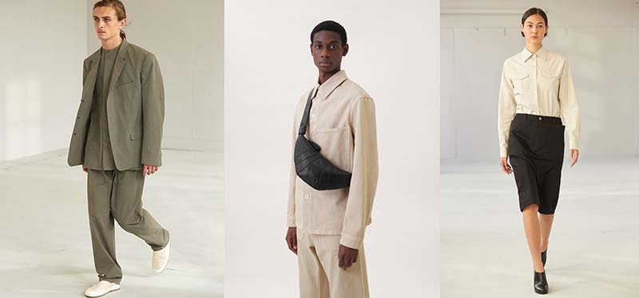
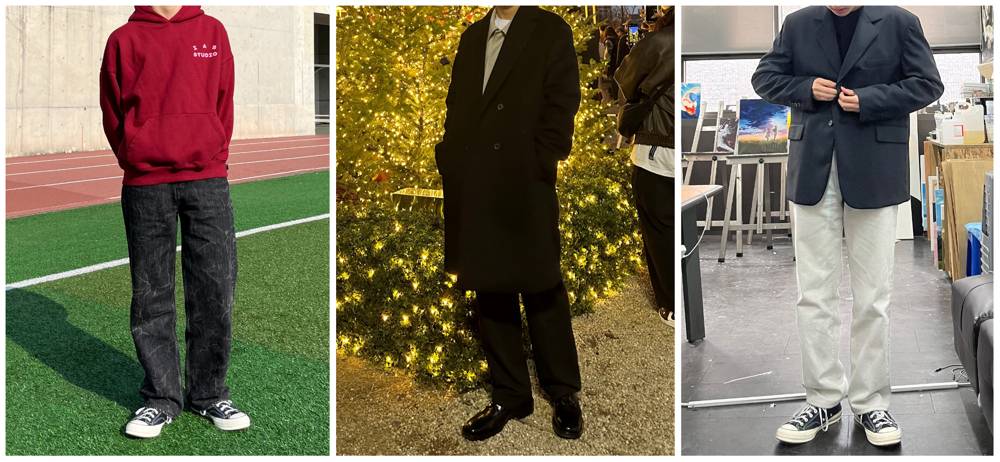

박지성
숭실대 산업정보시스템공학부
미니멀 룩
미니멀의 사전적 의미는 최저의, 최소한의 뜻으로, 심플함을 추구하는 패션 전반을 가리킵니다. 색채가 없이 블랙, 화이트 모노톤등을 조합하여 모던한 느낌이 나고 옷도 화려하지 않으며 액세사리도 최소화하는 룩이 미니멀 룩입니다. 한마디로 장식적인것 없이 깔끔한 것이라 말할 수 있습니다. 프첸치 시크' 라는 말이 있습니다. 아무거나 대충 주워입어도 멋있는 프랑스인들의 패션센스를 가리키는 말이죠. 그들의 꾸민 듯 안 꾸민듯한 '꾸안꾸' 패션을 떠올리시면 됩니다. 최근에는 미니멀에만 국한 되지않고 자신의 개성을 모자, 신발 혹은 가방을 포인트로 드러내는 패션도 각광받고있습니다.

나의 멋
